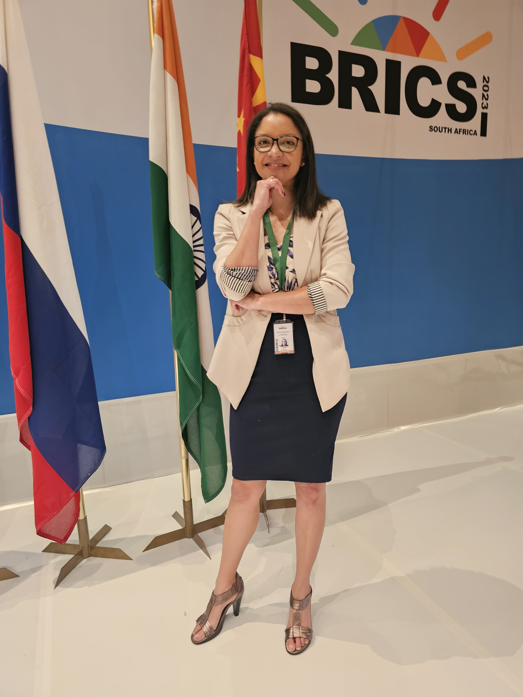
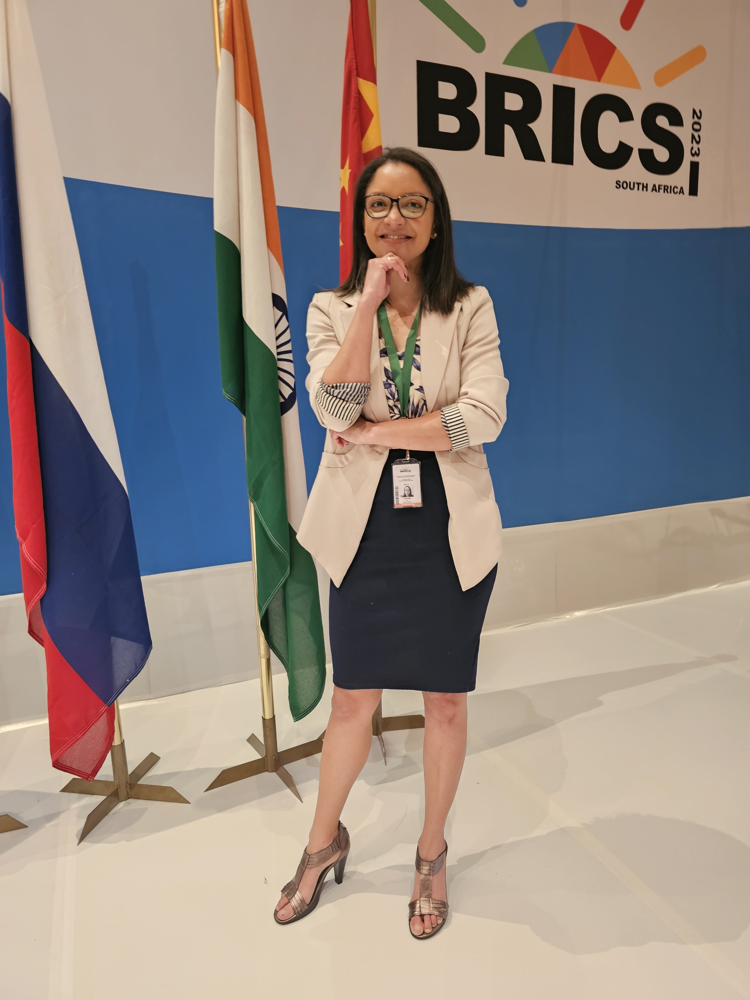

Building Equitable Health Systems
for a Digital World
Dr. Cherise Dunn is a global health innovator, Harvard Fellow, and Oppenheimer Memorial Trust Fellow advancing inclusive technology and policy solutions for the future of healthcare.


 
